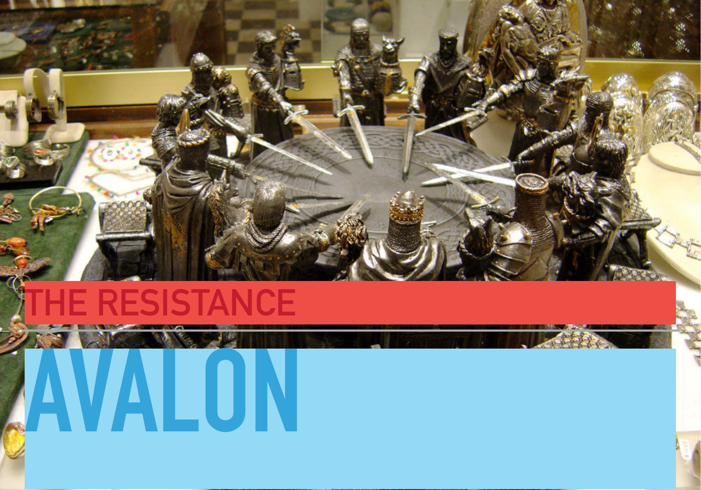
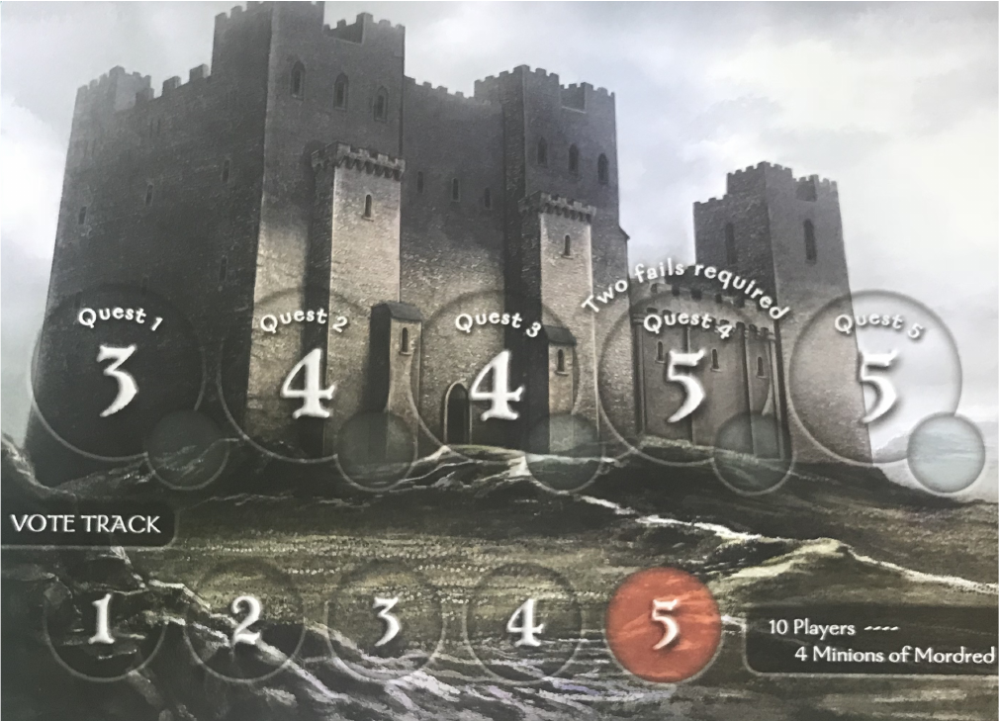
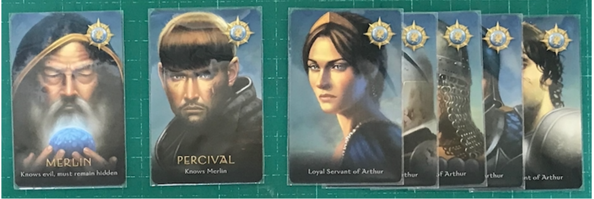
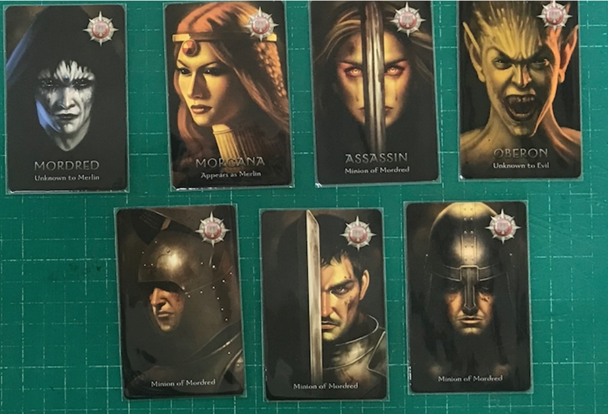
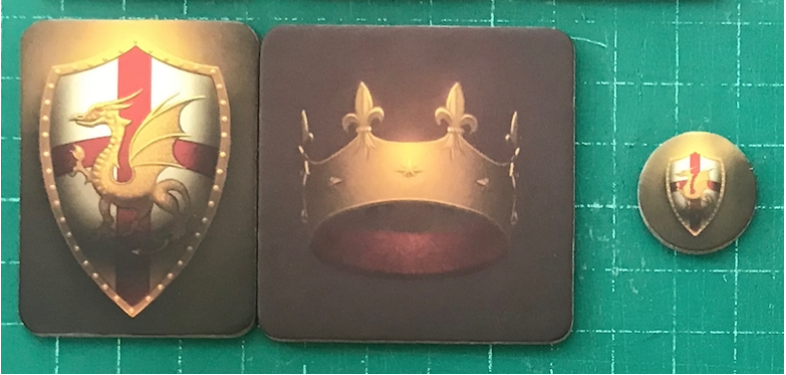
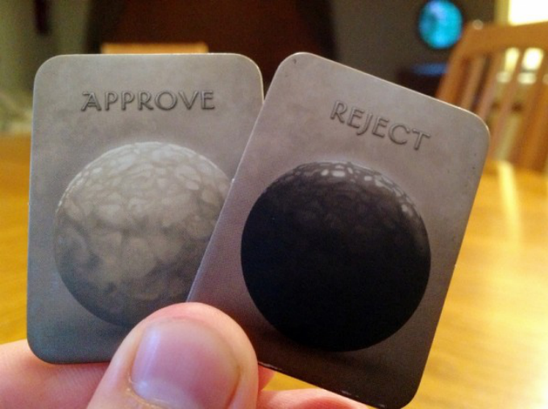
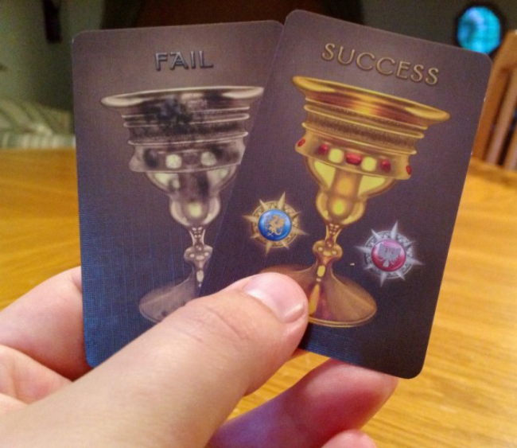
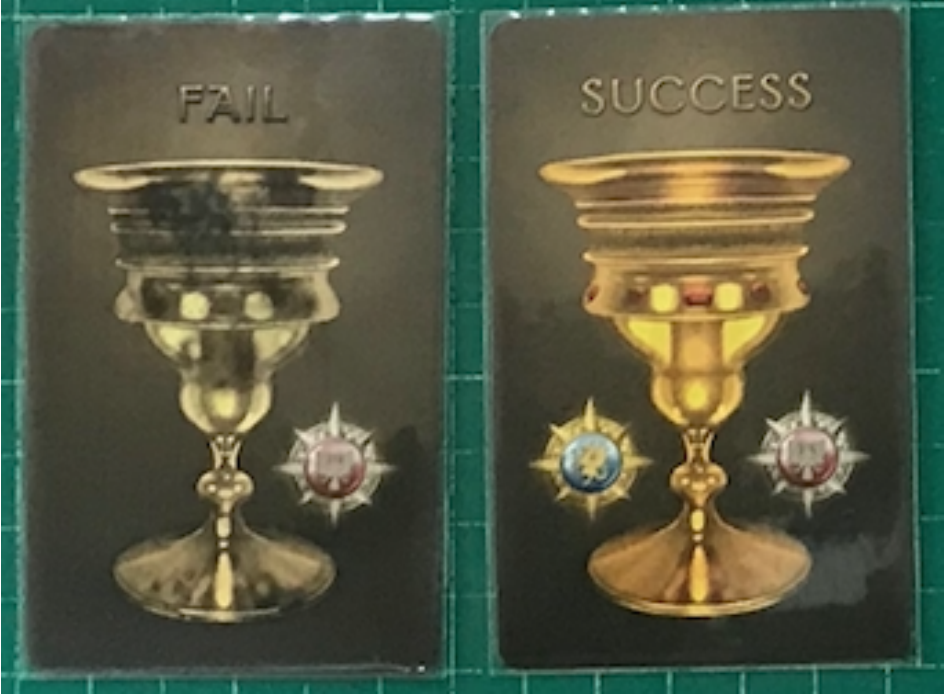
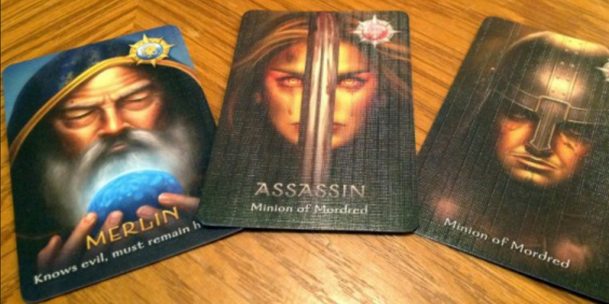

hidden role · voting · deduction
สอนเล่น Avalon
เกมประชุมอัศวินที่มีคนทรยศซ่อนอยู่ ฝ่ายดีต้องเลือกทีมไปทำภารกิจให้สำเร็จ ฝ่ายร้ายต้องแอบปนเข้าไปทำให้ภารกิจพัง
เป้าหมายของสไลด์นี้: ให้ผู้เล่นใหม่มองออกว่าอุปกรณ์บนโต๊ะคืออะไร เล่นหนึ่งรอบไหลอย่างไร และทำไม Merlin ต้องช่วยฝ่ายดีแบบไม่เปิดตัว

one sentence
เกมนี้คือการเลือกทีม ภายใต้ข้อมูลที่ไม่เท่ากัน
- ฝ่ายดีส่วนใหญ่ไม่รู้ว่าใครเป็นฝ่ายร้าย
- ฝ่ายร้ายส่วนใหญ่รู้จักพวกเดียวกัน และพยายามแทรกเข้าทีม
- Merlin รู้ว่าร้ายคือใคร แต่บอกตรงเกินไปไม่ได้
- Assassin จะรอดูว่าใครน่าจะเป็น Merlin ตอนท้ายเกม
ประโยคที่ควรจำ
ฝ่ายดีต้องชนะด้วยข้อมูล แต่ต้องไม่ทำให้ฝ่ายร้ายรู้ว่าใครคือ Merlin
winning conditions
ใครชนะอย่างไร
ฝ่ายดี
ทำภารกิจสำเร็จ 3 ครั้ง และ Assassin ทาย Merlin ไม่ถูก
ฝ่ายร้าย
ทำให้ภารกิจล้มเหลว 3 ครั้ง หรือให้การโหวตทีมถูก Reject ครบ 5 ครั้งในภารกิจเดียว หรือ Assassin ทาย Merlin ถูก
setup in 60 seconds
ตั้งเกมใน 60 วินาที
ดูว่ามี 5-10 คน แล้วหยิบการ์ดฝ่ายดี/ฝ่ายร้ายตามจำนวนผู้เล่น
ใช้ Merlin, Assassin, Loyal Servant และ Minion ก่อน บทเสริมเก็บไว้รอบถัดไป
สับการ์ดแล้วแจกคนละ 1 ใบ ทุกคนดูของตัวเองเงียบ ๆ
ทุกคนได้ Approve และ Reject เพื่อใช้โหวตทีม
เลือกด้านบอร์ดให้ตรงจำนวนผู้เล่น แล้ววาง marker ที่ Quest 1
Leader คนแรกถือ token แล้วเตรียมเสนอทีมแรกหลังช่วงหลับตา
ย้ำกับผู้เล่นใหม่ก่อนเริ่ม: บทบาทเป็นความลับ แต่การคุย การโหวต และผลภารกิจเป็นข้อมูลที่ทุกคนใช้ตามเกมได้
player count
ดูจำนวนผู้เล่น แล้วหยิบการ์ดตามฝ่าย
ฝ่ายดี 3
ฝ่ายร้าย 2
ฝ่ายดี 4
ฝ่ายร้าย 2
ฝ่ายดี 4
ฝ่ายร้าย 3
ฝ่ายดี 5
ฝ่ายร้าย 3
ฝ่ายดี 6
ฝ่ายร้าย 3
ฝ่ายดี 6
ฝ่ายร้าย 4
เกมแรกแนะนำใช้ Merlin + Assassin ก่อน อย่าเพิ่งใส่บทบาทเสริมเยอะเกินไป

board anatomy
ดูบอร์ดภารกิจอย่างไร
เกมมี 5 ภารกิจ ใครทำสำเร็จหรือทำพังครบ 3 ภารกิจก่อนจะเข้าเงื่อนไขชนะ
บอกจำนวนคนที่ Leader ต้องเลือกไปทำภารกิจนั้น เช่น 2 คน, 3 คน หรือ 4 คน
ถ้าทีมถูก Reject ให้เลื่อน track ไปข้างหน้า ครบ 5 ครั้งใน Quest เดียว ฝ่ายร้ายชนะทันที
Quest 4 เมื่อเล่น 7 คนขึ้นไป ต้องมี Fail 2 ใบ ภารกิจจึงล้มเหลว
good roles
ฝ่ายดี: ชนะด้วยการอ่านโต๊ะให้ขาด

evil roles
ฝ่ายร้าย: ปนเข้าทีมและทำให้ข้อมูลสับสน

night script
ช่วงหลับตา: ใครรู้อะไร
สำหรับเกมแรก ใช้ script สั้น ๆ นี้พอ เพื่อให้ทุกคนรู้ข้อมูลเริ่มต้นถูกต้องโดยไม่ต้องจำบทเสริม
“ทุกคนหลับตา กำมือไว้ข้างหน้า ห้ามพูด ห้ามชี้ชัดเกินจำเป็น”
“Minion และ Assassin ลืมตา มองหากัน แล้วหลับตา”
“ฝ่ายร้ายยกนิ้วโป้งให้ Merlin เห็น Merlin ลืมตา ดูว่าใครเป็นฝ่ายร้าย แล้วหลับตา”
“ทุกคนเอามือลง ลืมตาได้ Leader คนแรกเสนอทีมสำหรับ Quest 1”
เกมแรกยังไม่ต้องใช้ Percival, Morgana, Mordred หรือ Oberon จะได้โฟกัสที่วงจรเสนอทีม โหวตทีม และทำภารกิจก่อน
round loop
หนึ่งรอบเล่นแบบนี้
เสนอทีม
Leader เลือกคนตามจำนวนที่ภารกิจต้องการ
โหวตทีม
ทุกคนโหวต Approve หรือ Reject ว่าทีมนี้ควรผ่านไหม
ส่งภารกิจ
เฉพาะคนในทีมเท่านั้นที่ส่ง Success/Fail แบบลับ
อ่านผล
สำเร็จหรือล้มเหลว แล้วเปลี่ยน Leader



team vote
การโหวตทีมสำคัญพอ ๆ กับภารกิจ
- Approve/Reject คือโหวตว่า “ทีมนี้ควรได้ไปทำภารกิจไหม”
- ทุกคนโหวต แม้ตัวเองไม่ได้อยู่ในทีม
- ต้องได้เสียงข้างมาก Approve ทีมจึงผ่าน ถ้าคะแนนเสมอ ถือว่า Reject
- Reject ครบ 5 ครั้งในภารกิจเดียว ฝ่ายร้ายชนะทันที
ช่วงนี้ยังไม่มีใครส่ง Success/Fail แค่ตัดสินใจก่อนว่าเชื่อใจทีมที่ Leader เสนอหรือไม่
ลองกดเลือก
quest phase
ภารกิจสำเร็จหรือล้มเหลวอย่างไร
- เฉพาะคนในทีมเท่านั้นที่ส่งการ์ดภารกิจ
- คนที่ไม่ได้อยู่ในทีม ไม่ส่ง Success/Fail ใน Quest นั้น
- ฝ่ายดีต้องส่ง Success
- ฝ่ายร้ายเลือกได้ว่าจะส่ง Success หรือ Fail
- ปกติ Fail 1 ใบก็ทำให้ภารกิจล้มเหลว
ข้อยกเว้นที่ต้องดูบนบอร์ด: Quest 4 เมื่อเล่น 7 คนขึ้นไป ต้องมี Fail 2 ใบ ภารกิจจึงล้มเหลว

quick check
ถ้าทีมมี 3 คน แล้วเปิดภารกิจเจอ Fail 1 ใบ เรารู้อะไรแน่ ๆ?
Merlin problem
Merlin รู้เยอะ แต่พูดตรงเกินไปไม่ได้
Merlin เห็นฝ่ายร้าย จึงช่วยฝ่ายดีได้มากที่สุด แต่ถ้าทำตัวเหมือนรู้คำตอบทุกอย่าง Assassin จะจับได้ตอนท้ายเกม
Merlin ที่ดีไม่ใช่คนที่พูดว่า “คนนี้ร้ายแน่นอน” แต่เป็นคนที่ค่อย ๆ พาโต๊ะไปทางทีมที่ปลอดภัย โดยยังดูเหมือนผู้เล่นปกติ
Assassin ending
ฝ่ายดีสำเร็จ 3 ภารกิจ ยังไม่ชนะทันที
ถ้าฝ่ายดีทำภารกิจสำเร็จครบ 3 ครั้ง ฝ่ายร้ายจะคุยกัน แล้ว Assassin เลือกผู้เล่นฝ่ายดี 1 คนที่คิดว่าเป็น Merlin
ถ้าทายถูก ฝ่ายร้ายชนะ ถ้าทายผิด ฝ่ายดีชนะ

quick check
Good สำเร็จ 3 ภารกิจแล้ว เกมจบทันทีไหม?
beginner strategy
มือใหม่ควรคิดอย่างไร
ถ้าเป็นฝ่ายดี
อย่าเชื่อแค่คำพูด ดูว่าใครโหวตผ่านทีมไหน และผลภารกิจออกมาอย่างไร
ถ้าเป็นฝ่ายร้าย
อย่า Fail ทุกครั้งจนโดนจับ บางครั้งส่ง Success เพื่อซ่อนตัวได้
ถ้าเป็น Merlin
ช่วยฝ่ายดีด้วยคำถาม เหตุผล และ vote pattern ไม่ใช่ประกาศความจริงทั้งหมด
ถ้าเป็น Assassin
จดว่าใครเหมือนรู้มากเกินไป ใครเลี่ยงทีมร้ายได้แม่นผิดปกติ
vote scenario
สถานการณ์: ภารกิจ 1 มี A+B แล้ว Fail หลังจากนั้น Leader เสนอ A+C ควรคิดอะไร?
pre-play quiz
ทุกคนมีสิทธิ์โหวตทีมไหม แม้ไม่ได้อยู่ในทีม?
ready checklist
พร้อมเริ่มรอบแรก
ก่อนปล่อยโต๊ะเล่นจริง ให้อาจารย์เช็ก 6 ข้อนี้กับนักศึกษาแบบเร็ว ๆ
ดูการ์ดตัวเองแล้วคว่ำไว้ ไม่เปิดให้คนอื่นเห็น
หลังช่วงหลับตา Minion และ Assassin ควรรู้ว่าพวกเดียวกันคือใคร
Merlin ช่วยฝ่ายดีได้ แต่ต้องไม่ชี้ชัดจน Assassin จับได้
ดู Quest ปัจจุบันก่อนเสมอว่าต้องเลือกกี่คน
Approve/Reject เปิดพร้อมกัน และคะแนนเสมอคือ Reject
คนในทีมส่ง Success/Fail แบบลับ แล้วเปิดรวมเพื่อดูผล Quest
ready to play
Avalon ใน 6 ประโยค
- ทุกคนมีบทบาทลับ และอยู่ฝ่ายดีหรือฝ่ายร้าย
- Leader เสนอทีมไปทำภารกิจ
- ทุกคนโหวตว่าทีมนี้ควรผ่านหรือไม่
- คนในทีมส่ง Success/Fail แบบลับ
- ฝ่ายดีชนะด้วย 3 Success แต่ต้องซ่อน Merlin
- ฝ่ายร้ายชนะด้วย 3 Fail หรือ Assassin ทาย Merlin ถูก
อ้างอิงกติกา
สไลด์นี้ใช้ภาพจากไฟล์สไลด์ที่ผู้สอนให้มา เพื่อช่วยให้ผู้เรียนเห็นอุปกรณ์จริงบนโต๊ะ